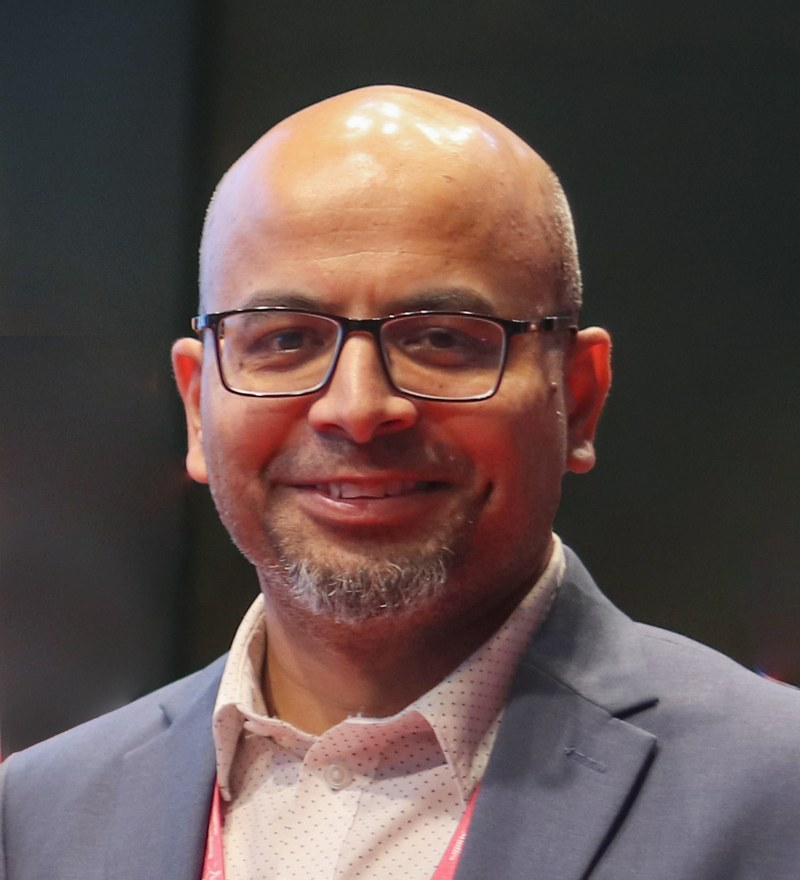

Digital Governance & Law
Principal contributor to Bangladesh's first Personal Data Protection Act and Cyber Security Act, and its National Data Governance Act — while repealing nine laws previously used to harass and arrest citizens.
Maastricht, The Netherlands — Dhaka-born
Telecom & Technology Executive · Former Special Assistant to the Chief Adviser, Government of Bangladesh · Author
Twenty years building the networks, data centres, and digital policy that connect nations — from radio-access network architecture at a leading European operator to the cabinet table of Bangladesh's interim government, with nine published books along the way.

About
Faiz Ahmad Taiyeb is a Bangladeshi-Dutch telecommunications architect, digital-policy adviser, and author based in Maastricht, the Netherlands. Over a twenty-year career spanning Ericsson, VodafoneZiggo, and the Government of Bangladesh, he has worked at every layer of the digital world — from radio-network engineering and hyperscale data-centre design to national cybersecurity legislation and cabinet-level policy.
Between 2024 and 2026 he served as Special Assistant to the Chief Adviser of Bangladesh, Nobel Peace Prize laureate Professor Muhammad Yunus, with the status of Minister of State. In that role he directed twelve state-owned telecom and technology companies and led the drafting of the country's first personal-data-protection law, its cybersecurity legislation, and its national digital-transformation strategy.
He is also the author of nine books on Bangladesh's development, and a columnist on energy and technology policy for Prothom Alo, The Daily Star, and The Business Standard.
Public Service
Special Assistant to the Chief Adviser of Bangladesh (status of Minister of State), 2025–2026
Appointed by the interim government led by Nobel Peace Prize laureate Professor Muhammad Yunus, Mr. Taiyeb directed twelve state-owned telecom and technology companies and a portfolio of 26 national projects, leading some of Bangladesh's most consequential digital reforms in decades.
Principal contributor to Bangladesh's first Personal Data Protection Act and Cyber Security Act, and its National Data Governance Act — while repealing nine laws previously used to harass and arrest citizens.
Principal author of the National Digital Transformation Strategy 2025–2030 and the Posts & Telecommunications Transformation Strategy, charting the country's digital and telecom direction to 2030.
Directed the rollout of the Nagorik Sheba national single-service window to over 1,000 centres within a year, and the architecture of Bangladesh's national data-exchange and interoperability platform.
Directed 12 state telecom and technology companies: doubled the nation's submarine-cable bandwidth, brought two loss-making carriers to first-ever profitability, and added roughly 1,200 mobile sites in a single year.
Oversaw the national data-centre expansion, tripling compute capacity, and led the introduction of Starlink to Bangladesh while safeguarding data sovereignty.
Rebuilt national cyber-incident-response capability and worked to guarantee that no future government could unilaterally shut down the internet.
Appointed under the interim government of Nobel Peace Prize laureate Professor Muhammad Yunus
Career
Two decades across telecom operators, technology vendors, and government.
Domain architecture and technology strategy for an AI-driven analytics platform, spanning ERP design, governance automation, and geospatial data systems.
Directed 12 state-owned telecom and ICT companies and a portfolio of 26 national projects; led digital, cybersecurity, and telecom-policy reform for the interim government.
Led national ICT strategy formulation and telecom-roadmap development, and shaped Bangladesh's national AI-strategy framework and data-governance vision.
Fourteen years directing RAN architecture, self-optimising network (SON) automation, and 4G/5G/IoT feature delivery for one of Europe's largest telecom operators; led the Netherlands' complete 3G network shutdown.
Managed KPI/SLA performance and network-evolution planning for major telecom accounts across Europe and West Africa.
Solution architecture and network engineering across South Korea, Ghana, Nigeria, Malaysia, and Bangladesh.
Books & Writing
Author of nine books on Bangladesh's economy, development, and technology, and a widely read columnist on energy and digital policy.
The Fourth Industrial Revolution and Bangladesh
2020
Bangladesh: 50 Years of Economy
2021
Incredible Narratives of Unstoppable Development
2022
Some Crises and Possibilities of Bangladesh on the Question of Development
2022
Water, Environment, and Waste Management of Bangladesh
2022
Microcredit, Education, Unemployment, and the BCS
2024
The Principles and Philosophy of Development
2024
2024
Friendly Nation
2025
More writing: Prothom Alo · The Daily Star · The Business Standard
Contact
For advisory engagements, speaking invitations, or media enquiries, reach out by email or connect on LinkedIn.
Based in Maastricht, the Netherlands